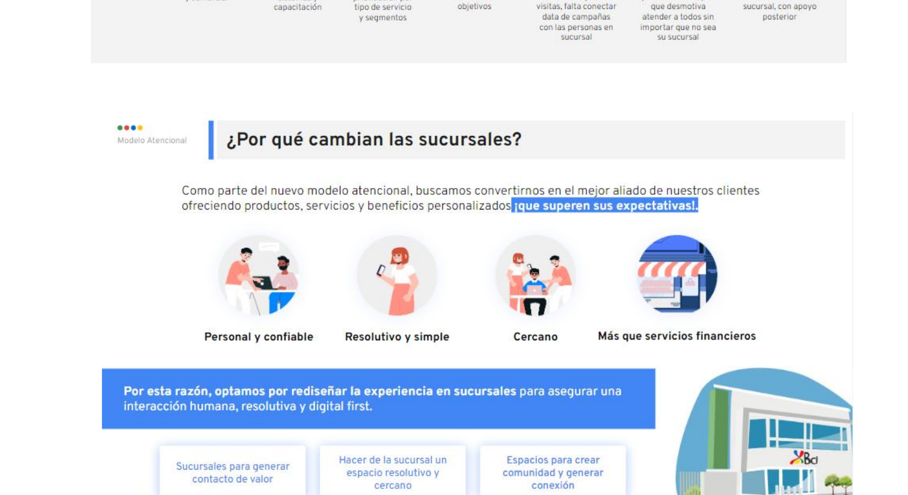

01
Research
Recap: dolores transversales en las sucursales (AS-IS)Recap: cross-cutting pains in branches (AS-IS)
Mapeamos las experiencias de los clientes y sus causas a lo largo de toda la sucursal: variación del servicio entre sucursales, comunicación ambigua, tiempos de espera altos, canales digitales desactualizados, atención product-centric y un modelo centralizado que no incentiva la relación.
We mapped customer experiences and their root causes across the whole branch: inconsistent service between branches, ambiguous communication, high waiting times, outdated digital channels, product-centric service, and a centralized model that doesn't encourage relationships.

Blueprint AS-IS — experiencias de los clientes y las causas detrás de cada dolor.
AS-IS blueprint — customer experiences and the causes behind each pain.
¿Por qué cambian las sucursales?Why are branches changing?
Como parte de un nuevo modelo atencional, buscamos convertirnos en el mejor aliado de nuestros clientes, ofreciendo productos, servicios y beneficios personalizados que superen sus expectativas. Por eso optamos por rediseñar la experiencia para asegurar una interacción humana, resolutiva y digital-first.
As part of a new service model, we aimed to become our clients' best ally, offering personalized products, services and benefits that exceed their expectations. So we chose to redesign the experience to ensure a human, resolutive and digital-first interaction.
Personal y confiablePersonal & trustworthy
Resolutivo y simpleResolutive & simple
CercanoClose
Más que servicios financierosMore than financial services